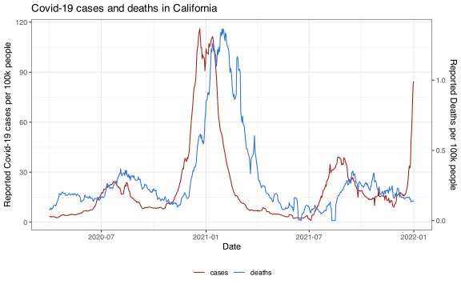
Forecasting and Time-Series Models
Venue – dd Somemonth yyyy
Outline
Linear Regression for Time Series Data
Evaluation Methods
ARX Models
Considerations for Different Horizons
Overfitting and Regularization
Prediction Intervals
Forecasting with Versioned Data
Modeling Multiple Time Series
Linear Regression for Time Series Data
Basics of linear regression
Assume we observe a predictor \(x_i\) and an outcome \(y_i\) for \(i = 1, \dots, n\).
Linear regression seeks coefficients \(\beta_0\) and \(\beta_1\) such that
\[y_i \approx \beta_0 + \beta_1 x_i\]
is a good approximation for every \(i = 1, \dots, n\).
- In R, the coefficients are found by running
lm(y ~ x), whereyis the vector of responses andxthe vector of predictors.
Multiple linear regression
- Given \(p\) different predictors, we seek \((p+1)\) coefficients such that
\[y_i \approx \beta_0 + \beta_1 x_{i1} + \dots + \beta_p x_{ip}\] is a good approximation for every \(i = 1, \dots, n\).
Linear regression with lagged predictor
In time series, outcomes and predictors are usually indexed by time \(t\).
Goal: predicting future \(y\), given present \(x\).
Model: linear regression with lagged predictor
\[\hat y_t = \hat \beta + \hat \beta_0 x_{t-k}\]
i.e. regress the outcome \(y\) at time \(t\) on the predictor \(x\) at time \(t-k\).
- Equivalent way to write the model:
\[\hat y_{t+k} = \hat \beta + \hat \beta_0 x_t\]
Example: predicting COVID deaths
During the pandemic, interest in predicting COVID deaths 7, 14, 21, 28 days ahead.
Can we reasonably predict COVID deaths 28 days ahead by just using cases today?
If we let
\[y_{t+28} = \text{deaths at time } t+28 \quad\quad x_{t} = \text{cases at time } t\] is the following a good model?
\[\hat y_{t+28} = \hat\beta_0 + \hat\beta_1 x_{t}\]
Example: COVID cases and deaths in California
Let’s focus on California.
Cases seem highly correlated with deaths several weeks later.
An `epi_df` object, 6 x 4 with metadata:
* geo_type = state
* time_type = day
* as_of = 2024-10-23 11:07:29.405142
# A tibble: 6 × 4
geo_value time_value cases deaths
* <chr> <date> <dbl> <dbl>
1 ca 2020-04-01 3.17 0.0734
2 ca 2020-04-02 3.48 0.0835
3 ca 2020-04-03 3.44 0.0894
4 ca 2020-04-04 3.05 0.0778
5 ca 2020-04-05 3.28 0.0876
6 ca 2020-04-06 3.37 0.0848Checking correlation
Let’s split the data into a training and a test set (before/after 2021-03-01).
On training set: large correlation between cases and deaths 28 days ahead (> 0.95).
- Let’s use (base) R to prepare the data and fit
\[\hat y_{t+28} = \hat\beta + \hat\beta_0 x_{t}\]
Preparing the data
- Check if
deathsis approximately linear inlagged_cases:
Fitting lagged linear regression in R
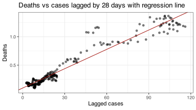Evaluation
Error metrics
Assume we have predictions \(\hat y_{new, t}\) for the unseen observations \(y_{new,t}\) over times \(t = 1, \dots, N\).
Four commonly used error metrics are:
mean squared error (MSE)
mean absolute error (MAE)
mean absolute percentage error (MAPE)
mean absolute scaled error (MASE)
Error metrics: MSE and MAE
\[MSE = \frac{1}{N} \sum_{t=1}^N (y_{new, t}- \hat y_{new, t})^2\] \[MAE = \frac{1}{N} \sum_{t=1}^N |y_{new, t}- \hat y_{new, t}|\]
MAE gives less importance to extreme errors than MSE.
Drawback: both metrics are scale-dependent, so they are not universally interpretable. (For example, if \(y\) captures height, MSE and MAE will vary depending on whether we measure in feet or meters.)
Error metrics: MAPE
- Fixing scale-dependence:
\[MAPE = 100 \times \frac{1}{N} \sum_{t=1}^N \left|\frac{y_{new, t}- \hat y_{new, t}}{y_{new, t}}\right|\]
Drawbacks:
Erratic behavior when \(y_{new, t}\) is close to zero
It assumes the unit of measurement has a meaningful zero (e.g. using Fahrenheit or Celsius to measure temperature will lead to different MAPE)
Comparing MAE and MAPE
Note
There are situations when MAPE is problematic!
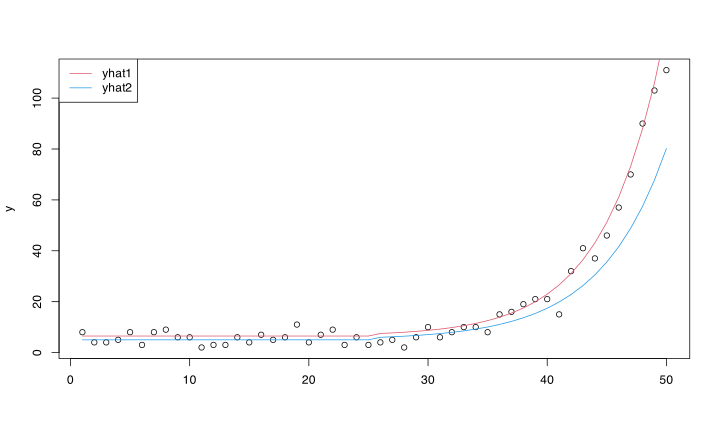
MAE MAPE
yhat1 2.873328 43.14008
yhat2 5.382247 36.08279Error metrics: MASE
\[MASE = 100 \times \frac{\frac{1}{N} \sum_{t=1}^N |y_{new, t}- \hat y_{new, t}|} {\frac{1}{N-1} \sum_{t=2}^N |y_{new, t}- y_{new, t-1}|}\]
Advantages:
is universally interpretable (not scale dependent)
avoids the zero-pitfall
MASE in words: we normalize the error of our forecasts by that of a naive method which always predicts the last observation.
Comparing MAE, MAPE and MASE
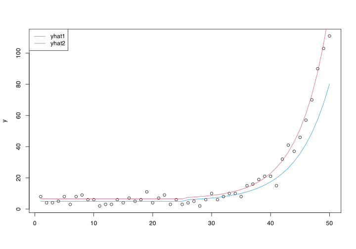
MAE MAPE MASE
yhat1 2.873328 43.14008 66.10004
yhat2 5.382247 36.08279 123.81696Defining the error metrics in R
MSE <- function(truth, prediction) {
mean((truth - prediction)^2)}
MAE <- function(truth, prediction) {
mean(abs(truth - prediction))}
MAPE <- function(truth, prediction) {
100 * mean(abs(truth - prediction) / truth)}
MASE <- function(truth, prediction) {
100 * MAE(truth, prediction) / mean(abs(diff(truth)))}Estimating the prediction error
Given an error metric, we want to estimate the prediction error under that metric.
This can be accomplished in different ways, using the
Training error
Split-sample error
Time series cross-validation error (using all past data or a trailing window)
Training error
The easiest but worst approach to estimate the prediction error is to use the training error, i.e. the average error on the training set that was used to fit the model.
The training error is
generally too optimistic as an estimate of prediction error
more optimistic the more complex the model!1
Training error
Linear regression of COVID deaths on lagged cases
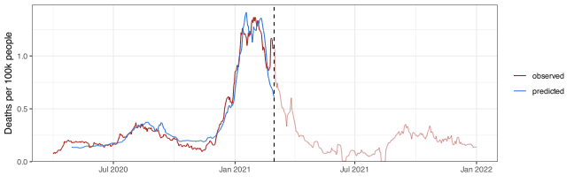 MAE MASE
training 0.05985631 351.4848Split-sample error
To compute the split-sample error
Split data into training (up to time \(t_0\)), and test set (after \(t_0\))
Fit the model to the training data only
Make predictions for the test set
Compute the selected error metric on the test set only
Formally, the split-sample MSE is
\[\text{SplitMSE} = \frac{1}{n-t_0} \sum_{t = t_0 +1}^n (\hat y_t - y_t)^2\]
- Split-sample estimates of prediction error don’t mimic a situation where we would refit the model in the future. They are pessimistic if the relation between outcome and predictors changes over time.
Split-sample error
Linear regression of COVID deaths on lagged cases
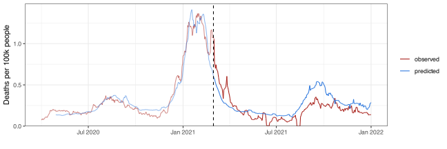 MAE MASE
training 0.05985631 351.4848
split-sample 0.10005007 659.8971Time-series cross-validation (CV)
1-step ahead predictions
If we refit in the future once new data are available, a more appropriate way to estimate the prediction error is time-series cross-validation.
To get 1-step ahead predictions (i.e. at time \(t\) we forecast for \(t+1\)) we proceed as follows, for \(t = t_0, t_0+1, \dots\)
Fit the model using data up to time \(t\)
Make a prediction for \(t+1\)
Record the prediction error
The cross-validation MSE is then
\[CVMSE = \frac{1}{n-t_0} \sum_{t = t_0}^{n-1} (\hat y_{t+1|t} - y_{t+1})^2\]
where \(\hat y_{t+1|t}\) indicates a prediction for \(y\) at time \(t+1\) that was made with data available up to time \(t\).
Time-series cross-validation (CV)
\(h\)-step ahead predictions
In general, if we want to make \(h\)-step ahead predictions (i.e. at time \(t\) we forecast for \(t+h\)), we proceed as follows for \(t = t_0, t_0+1, \dots\)
Fit the model using data up to time \(t\)
Make a prediction for \(t+h\)
Record the prediction error
The cross-validation MSE is then
\[CVMSE = \frac{1}{n-t_0} \sum_{t = t_0}^{n-h} (\hat y_{t+h|t} - y_{t+h})^2\]
where \(\hat y_{t+h|t}\) indicates a prediction for \(y\) at time \(t+h\) that was made with data available up to time \(t\).
Time-series cross-validation (CV)
Linear regression of COVID deaths on lagged cases
Getting the predictions requires slightly more code:
n <- nrow(ca) #length of time series
h <- k #number of days ahead for which prediction is wanted
pred_all_past <- rep(NA, length = n-h-t0+1) #initialize vector of predictions
for (t in t0:(n-h)) {
# fit to all past data and make 1-step ahead prediction
reg_all_past = lm(deaths ~ lagged_cases, data = ca, subset = (1:n) <= t)
pred_all_past[t-t0+1] = predict(reg_all_past, newdata = data.frame(ca[t+h, ]))
}Note
With the current model, we can only predict \(k\) days ahead (where \(k\) = number of days by which predictor is lagged)!
Time-series cross-validation (CV)
Linear regression of COVID deaths on lagged cases

MAE MASE
training 0.05985631 351.4848
split-sample 0.10005007 659.8971
time series CV 0.08973951 732.5769Regression on a trailing window
So far, to get \(h\)-step ahead predictions for time \(t+h\), we have fitted the model on all data available up to time \(t\). We can instead use a trailing window, i.e. fit the model on a window of data of length \(w\), starting at time \(t-w\) and ending at \(t\).
Advantage: if the predictors-outcome relation changes over time, training the forecaster on a window of recent data can better capture the recent relation which might be more relevant to predict the outcome in the near future.
Window length \(w\) considerations:
if \(w\) is too big, the model can’t adapt to the recent predictors-outcome relation
if \(w\) is too small, the fitted model may be too volatile (trained on too little data)
Trailing window
Linear regression of COVID deaths on lagged cases
# Getting the predictions through CV with trailing window
w <- 200 #trailing window size
h <- k #number of days ahead for which prediction is wanted
pred_trailing <- rep(NA, length = n-h-t0+1) #initialize vector of predictions
for (t in t0:(n-h)) {
# fit to a trailing window of size w and make 1-step ahead prediction
reg_trailing = lm(deaths ~ lagged_cases, data = ca,
subset = (1:n) <= t & (1:n) > (t-w))
pred_trailing[t-t0+1] = predict(reg_trailing, newdata = data.frame(ca[t+h, ]))
}Time-series CV: all past vs trailing window
Linear regression of COVID deaths on lagged cases
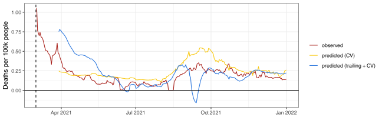 MAE MASE
training 0.05985631 351.4848
split-sample 0.10005007 659.8971
time series CV 0.08973951 732.5769
time series CV + trailing 0.10270064 838.3834ARX Models
Autoregressive (AR) model
- Idea: predicting the outcome via a linear combination of (some of) its lags
\[\hat y_{t+h} = \hat \phi + \hat\phi_0 y_{t} + \hat\phi_1 y_{t-1} + \dots + \hat\phi_p y_{t-p}\]
Notice: we don’t need to include all contiguous lags1.
For example, we could fit
\[\hat y_{t+h} = \hat \phi + \hat\phi_0 y_{t} + \hat\phi_1 y_{t-7} + \hat\phi_2 y_{t-14}\]
AR model for COVID deaths
Let’s disregard cases, and only use COVID deaths to predict deaths 28 days ahead.
We will fit the model:
\[\hat y_{t+28} = \hat\phi + \hat\phi_0 y_{t}\]
- Would this be a good forecaster?
Preparing the data and checking correlation
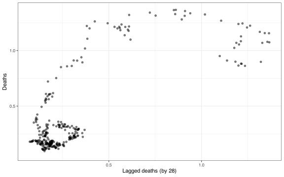
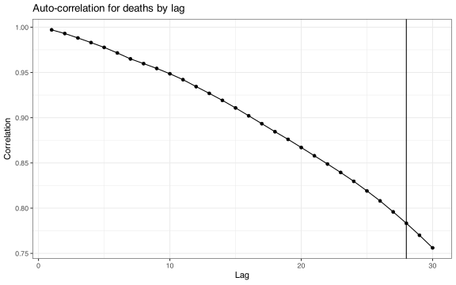
Fitting the AR model for COVID deaths
(Intercept) lagged_deaths
0.1023887 0.9523213 Note
The intercept is close to 0, and the coefficient is close to 1. This means that we are naively predicting the number of deaths in 28 days with (approximately) the number of deaths observed today.
Predictions on training and test sets (AR model)

MAE MASE
training 0.1469711 902.8794
split-sample 0.1899489 1252.8397Time-Series CV: all past and trailing (AR model)
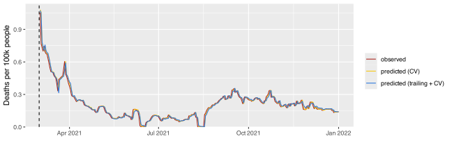 MAE MASE
training 0.1469711 902.8794
split-sample 0.1899489 1252.8397
time series CV 0.1242872 1014.6024
time series CV + trailing 0.1646065 1343.7439Autoregressive exogenous input (ARX) model
Idea: predicting the outcome via a linear combination of its lags and a set of exogenous (i.e. external) input variables
Example:
\[\hat y_{t+h} = \hat\phi + \sum_{i=0}^p \hat\phi_i y_{t-i} + \sum_{j=0}^q \hat\beta_j x_{t-j}\]
- We can construct more complex ARX models with multiple lags of several exogenous variables
ARX model for COVID deaths
To improve our predictions for COVID deaths 28 days ahead, we could merge the two models considered so far.
This leads us to the ARX model
\[\hat y_{t+28} = \hat\phi + \hat\phi_0 y_{t} + \hat\beta_0 x_{t}\]
- We can fit it on the training set by running
Predictions on training and test sets (ARX model)
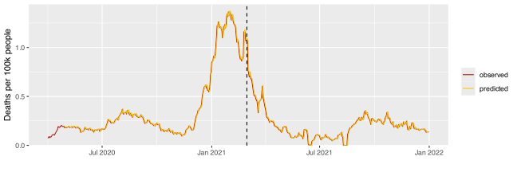 MAE MASE
training 0.06268428 368.0910
split-sample 0.08227714 542.6727Time-Series CV: all past and trailing (ARX model)
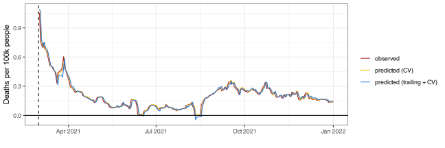 MAE MASE
training 0.06268428 368.0910
split-sample 0.08227714 542.6727
time series CV 0.06739289 550.1531
time series CV + trailing 0.04757330 388.3585Considerations for Different Horizons
Changing \(h\)
So far we focused on COVID deaths prediction 28 days ahead.
The ARX model we fitted had much better performance than the AR model.
We will next compare the AR model
\[\hat y_{t+h} = \hat\phi + \hat\phi_0 y_t\]
to the ARX model
\[\hat y_{t+h} = \hat\phi + \hat\phi_0 y_t + \hat\beta_0 x_t\]
for horizons \(h = 7, 14, 21, 28\) (using a trailing window of size 200).
Predicting 7 days ahead
MAE MASE
AR 0.12989192 934.5696
ARX 0.09713393 698.8765Predicting 14 days ahead
MAE MASE
AR 0.13037989 956.0440
ARX 0.06348795 465.5417Predicting 21 days ahead
MAE MASE
AR 0.1702452 1312.0747
ARX 0.0488983 376.8577Predicting 28 days ahead
MAE MASE
AR 0.1646065 1343.7439
ARX 0.0475733 388.3585Observations
For each horizon \(h\), the ARX model has always smaller error than the AR model.
The benefit of including cases as a predictor increases with \(h\).
The error of the AR model increases with \(h\), while the error of the ARX model decreases with \(h\).
Overfitting and Regularization
Too many predictors
What if we try to incorporate past information extensively by fitting a model with a very large number of predictors?
The estimated coefficients will be chosen to mimic the observed data very closely on the training set, leading to small training error
The predictive performance on the test set might be very poor, producing large split-sample and CV error
Issue
Overfitting!
ARX model for COVID deaths with many predictors
- When predicting COVID deaths 28 days ahead, we can try to use more past information by fitting a model that includes the past two months of COVID deaths and cases as predictors
\[\hat y_{t+28} = \hat\phi + \hat\phi_0 y_{t} + \hat\phi_1 y_{t-1} + \dots + \hat\phi_{59} y_{t-59} + \hat\beta_0 x_{t} + \dots + \hat\beta_{t-59} x_{t-59}\]
Preparing the data
y <- ca$deaths #outcome
lags <- 28:87 #lags used for predictors (deaths and cases)
# Build predictor matrix with 60 columns
X <- data.frame(matrix(NA, nrow = length(y), ncol = 2*length(lags)))
colnames(X) <- paste('X', 1:ncol(X), sep = '')
for (j in 1:length(lags)) {
# first 60 columns contain deaths lagged by 28, 29, ..., 87
X[, j] = dplyr::lag(ca$deaths, lags[j])
# last 60 columns contain cases lagged by 28, 29, ..., 87
X[, length(lags) + j] = dplyr::lag(ca$cases, lags[j])
}Fitting the ARX model
# Train/test split
y_train <- y[1:t0]
X_train <- X[1:t0, ]
y_test <- y[(t0+1):length(y)]
X_test <- X[(t0+1):length(y), ]
# Fitting the ARX model
reg = lm(y_train ~ ., data = X_train)
coef(reg) (Intercept) X1 X2 X3 X4
0.2758283711 0.2457314327 0.2225988768 -0.4559613879 -0.4731427507
X5 X6 X7 X8 X9
0.4570192882 -0.0829030158 0.0087610368 -0.1277561418 -0.0930270533
X10 X11 X12 X13 X14
0.2880726732 -0.8396082213 0.5525681932 -0.6656058745 -0.1372663639
X15 X16 X17 X18 X19
0.2441111445 -0.5549887598 -0.1984910609 -0.4381802967 0.9748005886
X20 X21 X22 X23 X24
-0.2252872009 -0.3603010052 -0.1484425645 -0.2629114744 0.6481906782
X25 X26 X27 X28 X29
-0.4386397760 0.2287881141 -0.4141878941 0.1538387231 0.0016914281
X30 X31 X32 X33 X34
-0.1675549452 0.1862035471 -0.7604163647 0.7661301939 -0.3567175136
X35 X36 X37 X38 X39
-0.6461899753 0.2820547532 0.3658805915 -0.1036095025 0.3168098103
X40 X41 X42 X43 X44
0.4270049404 -0.3861653324 0.1887767107 0.2446997478 0.0406226039
X45 X46 X47 X48 X49
0.3290951846 -0.4657697117 0.1271299593 0.3931515677 0.2836116580
X50 X51 X52 X53 X54
-0.3674019667 -0.4491442210 0.4524243063 -0.3428030503 0.4292019510
X55 X56 X57 X58 X59
0.4096633980 -0.5462527325 0.4501163940 -0.3929646040 -0.2112561496
X60 X61 X62 X63 X64
-0.3326657892 0.0175419874 -0.0077855053 -0.0024976868 0.0014263572
X65 X66 X67 X68 X69
-0.0048785301 0.0013524131 -0.0022148536 0.0065944994 0.0023437318
X70 X71 X72 X73 X74
-0.0040292424 0.0136591034 -0.0086165459 -0.0059687437 -0.0069756592
X75 X76 X77 X78 X79
0.0145125287 -0.0021987656 -0.0018740932 0.0043662687 0.0019855230
X80 X81 X82 X83 X84
0.0005040760 -0.0021147396 0.0030569084 -0.0043404977 -0.0081888972
X85 X86 X87 X88 X89
0.0124142487 -0.0019007422 -0.0091802229 0.0090002190 0.0096226370
X90 X91 X92 X93 X94
-0.0033216356 -0.0040088540 0.0006876339 -0.0152565542 -0.0112099615
X95 X96 X97 X98 X99
0.0289012311 0.0084111577 -0.0134474728 0.0083765726 -0.0089290862
X100 X101 X102 X103 X104
0.0069254713 -0.0178761659 0.0191826013 0.0011505708 0.0071752544
X105 X106 X107 X108 X109
0.0127445467 -0.0133315137 -0.0022960536 -0.0031951107 0.0102816246
X110 X111 X112 X113 X114
-0.0028098154 0.0092476436 -0.0120237253 -0.0079725070 0.0194764427
X115 X116 X117 X118 X119
-0.0170893902 0.0232396558 -0.0175601245 0.0002431107 0.0129597132
X120
-0.0196106522 Predictions on training and test set
MAE MASE
training 0.02888549 146.9367
split-sample 0.35664868 2352.3364Regularization
If we want to consider a large number of predictors, how can we avoid overfitting?
Idea: introduce a regularization parameter \(\lambda\) that shrinks or sets some of the estimated coefficients to zero, i.e. some predictors are estimated to have limited or no predictive power
Most common regularization methods
Ridge: shrinks coefficients to zero
Lasso: sets some coefficients to zero
Choosing \(\lambda\)
The regularization parameter \(\lambda\) can be selected by cross-validation:
Select a sequence of \(\lambda\)’s
Fit and predict for each such \(\lambda\)
Select the \(\lambda\) that leads to smaller error
The R library
glmnetimplements ridge and lasso regression, and can perform step 1. automatically.
Fit ARX + ridge/lasso for COVID deaths
library(glmnet) # Implements ridge and lasso
# We'll need to omit NA values explicitly, as otherwise glmnet will complain
na_obs <- 1:max(lags)
X_train <- X_train[-na_obs, ]
y_train <- y_train[-na_obs]
# Ridge regression: set alpha = 0, lambda sequence will be chosen automatically
ridge <- glmnet(X_train, y_train, alpha = 0)
beta_ridge <- coef(ridge) # matrix of estimated coefficients
lambda_ridge <- ridge$lambda # sequence of lambdas used to fit ridge
# Lasso regression: set alpha = 1, lambda sequence will be chosen automatically
lasso <- glmnet(X_train, y_train, alpha = 1)
beta_lasso <- coef(lasso) # matrix of estimated coefficients
lambda_lasso <- lasso$lambda # sequence of lambdas used to fit lasso
dim(beta_lasso) # One row per coefficient, one column per lambda value[1] 121 100Predictions on test set and selection of \(\lambda\)
# Predict values for second half of the time series
yhat_ridge <- predict(ridge, newx = as.matrix(X_test))
yhat_lasso <- predict(lasso, newx = as.matrix(X_test))
# Compute MAE
mae_ridge <- colMeans(abs(yhat_ridge - y_test))
mae_lasso <- colMeans(abs(yhat_lasso - y_test))
# Select index of lambda vector which gives lowest MAE
min_ridge <- which.min(mae_ridge)
min_lasso <- which.min(mae_lasso)
paste('Best MAE ridge:', round(min(mae_ridge), 3),
'; Best MAE lasso:', round(min(mae_lasso), 3))[1] "Best MAE ridge: 0.196 ; Best MAE lasso: 0.092"Estimated coefficients: shrinkage vs sparsity
ridge lasso
(Intercept) 4.112256e-01 0.1027530670
X1 5.497463e-03 0.0000000000
X2 5.443749e-03 0.0000000000
X3 5.385490e-03 0.0000000000
X4 5.313227e-03 0.0000000000
X5 5.258979e-03 0.0000000000
X6 5.188803e-03 0.0000000000
X7 5.139054e-03 0.0000000000
X8 5.076501e-03 0.0000000000
X9 4.981253e-03 0.0000000000
X10 4.886178e-03 0.0000000000
X11 4.809706e-03 0.0000000000
X12 4.729025e-03 0.0000000000
X13 4.667905e-03 0.0000000000
X14 4.583550e-03 0.0000000000
X15 4.499529e-03 0.0000000000
X16 4.448547e-03 0.0000000000
X17 4.397032e-03 0.0000000000
X18 4.368272e-03 0.0000000000
X19 4.316661e-03 0.0000000000
X20 4.249886e-03 0.0000000000
X21 4.183664e-03 0.0000000000
X22 4.127680e-03 0.0000000000
X23 4.050602e-03 0.0000000000
X24 3.988909e-03 0.0000000000
X25 3.822127e-03 0.0000000000
X26 3.584918e-03 0.0000000000
X27 3.283302e-03 0.0000000000
X28 2.888911e-03 0.0000000000
X29 2.415738e-03 0.0000000000
X30 1.824392e-03 0.0000000000
X31 1.152044e-03 0.0000000000
X32 3.881764e-04 0.0000000000
X33 -4.546563e-04 0.0000000000
X34 -1.293969e-03 0.0000000000
X35 -2.117525e-03 0.0000000000
X36 -2.801391e-03 0.0000000000
X37 -3.394630e-03 0.0000000000
X38 -4.006729e-03 0.0000000000
X39 -4.662078e-03 0.0000000000
X40 -5.354854e-03 0.0000000000
X41 -6.265590e-03 0.0000000000
X42 -7.230297e-03 0.0000000000
X43 -8.508468e-03 0.0000000000
X44 -9.918750e-03 0.0000000000
X45 -1.149602e-02 0.0000000000
X46 -1.319458e-02 0.0000000000
X47 -1.481247e-02 0.0000000000
X48 -1.630315e-02 0.0000000000
X49 -1.753316e-02 0.0000000000
X50 -1.813929e-02 0.0000000000
X51 -1.857362e-02 0.0000000000
X52 -1.893093e-02 0.0000000000
X53 -1.933053e-02 0.0000000000
X54 -1.957672e-02 0.0000000000
X55 -1.975165e-02 0.0000000000
X56 -2.012127e-02 0.0000000000
X57 -2.030953e-02 0.0000000000
X58 -2.037081e-02 0.0000000000
X59 -2.021378e-02 0.0000000000
X60 -1.976317e-02 -0.0345707637
X61 8.242683e-05 0.0095304559
X62 8.132113e-05 0.0000000000
X63 8.018020e-05 0.0000000000
X64 7.901220e-05 0.0000000000
X65 7.779561e-05 0.0000000000
X66 7.664052e-05 0.0000000000
X67 7.551905e-05 0.0000000000
X68 7.444242e-05 0.0000000000
X69 7.340449e-05 0.0000000000
X70 7.236918e-05 0.0000000000
X71 7.136972e-05 0.0000000000
X72 7.037117e-05 0.0000000000
X73 6.943229e-05 0.0000000000
X74 6.860455e-05 0.0000000000
X75 6.787924e-05 0.0000000000
X76 6.722652e-05 0.0015360023
X77 6.661688e-05 0.0000000000
X78 6.601493e-05 0.0000000000
X79 6.545565e-05 0.0000000000
X80 6.496923e-05 0.0000000000
X81 6.451692e-05 0.0000000000
X82 6.407003e-05 0.0000000000
X83 6.345530e-05 0.0000000000
X84 6.276881e-05 0.0000000000
X85 6.192521e-05 0.0000000000
X86 6.101792e-05 0.0000000000
X87 6.003796e-05 0.0000000000
X88 5.900856e-05 0.0000000000
X89 5.766256e-05 0.0000000000
X90 5.640154e-05 0.0000000000
X91 5.521221e-05 0.0000000000
X92 5.410753e-05 0.0000000000
X93 5.310748e-05 0.0000000000
X94 5.191454e-05 0.0000000000
X95 5.078166e-05 0.0000000000
X96 4.995013e-05 0.0000000000
X97 4.934901e-05 0.0000000000
X98 4.892197e-05 0.0000000000
X99 4.863106e-05 0.0000000000
X100 4.829392e-05 0.0000000000
X101 4.816553e-05 0.0000000000
X102 4.810093e-05 0.0000000000
X103 4.841180e-05 0.0000000000
X104 4.912355e-05 0.0005895771
X105 4.985320e-05 0.0000000000
X106 5.066950e-05 0.0000000000
X107 5.150530e-05 0.0000000000
X108 5.258211e-05 0.0000000000
X109 5.387059e-05 0.0000000000
X110 5.451414e-05 0.0000000000
X111 5.443739e-05 0.0000000000
X112 5.410652e-05 0.0000000000
X113 5.355103e-05 0.0000000000
X114 5.275985e-05 0.0000000000
X115 5.111364e-05 0.0000000000
X116 4.828218e-05 0.0000000000
X117 4.455698e-05 0.0000000000
X118 4.029228e-05 0.0000000000
X119 3.539927e-05 0.0000000000
X120 3.020232e-05 0.0000000000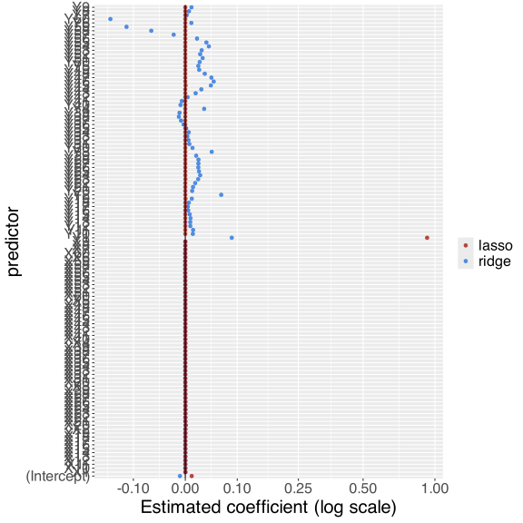
Predictions: ARX + ridge/lasso (train and test set)
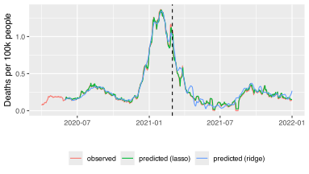 MAE MASE
ridge training 0.25271764 1285.5412
ridge split-sample 0.19616116 1293.8139
lasso training 0.06984086 355.2712
lasso split-sample 0.09163079 604.3663Time-series CV for ARX + ridge/lasso (trailing)
h <- 28 # number of days ahead
w <- 200 # window length
# Initialize matrices for predictions (one column per lambda value)
yhat_ridge <- matrix(NA, ncol = length(lambda_ridge), nrow = n-h-t0+1)
yhat_lasso <- matrix(NA, ncol = length(lambda_lasso), nrow = n-h-t0+1)
for (t in t0:(n-h)) {
# Indices of data within window
inds = t-w < 1:n & 1:n <= t
# Fit ARX + ridge/lasso
ridge_trail = glmnet(X[inds, ], y[inds], alpha = 0, lambda = lambda_ridge)
lasso_trail = glmnet(X[inds, ], y[inds], alpha = 1, lambda = lambda_lasso)
# Predict
yhat_ridge[t-t0+1, ] = predict(ridge_trail, newx = as.matrix(X[(t+h), ]))
yhat_lasso[t-t0+1, ] = predict(lasso_trail, newx = as.matrix(X[(t+h), ]))
}
# MAE values for each lambda
mae_ridge <- colMeans(abs(yhat_ridge - y_test[-c(1:(k-1))]))
mae_lasso <- colMeans(abs(yhat_lasso - y_test[-c(1:(k-1))]))
# Select lambda that minimizes MAE and save corresponding predictions
min_ridge <- which.min(mae_ridge)
min_lasso <- which.min(mae_lasso)
pred_cv_ridge <- yhat_ridge[, min_ridge]
pred_cv_lasso <- yhat_lasso[, min_lasso]
paste('Best MAE ridge:', round(min(mae_ridge), 3))[1] "Best MAE ridge: 0.12"[1] "Best MAE lasso: 0.062"Predictions: time-series CV for ARX + ridge/lasso (trailing)
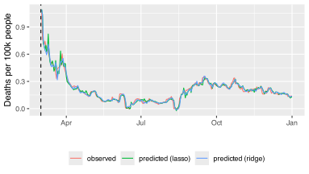 MAE MASE
ridge CV + trailing 0.11964733 976.7255
lasso CV + trailing 0.06243937 509.7157Prediction Intervals
Point predictions vs intervals
- So far, we have only considered point predictions, i.e. we have fitted models to provide our best guess on the outcome at time \(t+h\).
Important
What if we want to provide a measure of uncertainty around the point prediction or a likely range of values for the outcome at time \(t+h\)?
- For each target time \(t+h\), we can construct prediction intervals, i.e. provide ranges of values that are expected to cover the true outcome value a fixed fraction of times.
Prediction intervals for lm fits
To get prediction intervals for the models we previously fitted, we only need to tweak our call to
predictby adding as an input:interval = "prediction", level = pwhere \(p \in (0, 1)\) is the desired coverage.
The output from
predictwill then be a matrix withfirst column a point estimate
second column the lower limit of the interval
third column the upper limit of the interval
Prediction intervals for ARX (test)
fit lwr upr
1 0.7093207 0.5286159 0.8900255
2 0.6908382 0.5104118 0.8712647
3 0.6768019 0.4955346 0.8580692
4 0.6527938 0.4714708 0.8341169
5 0.6276180 0.4468436 0.8083924
6 0.6062234 0.4255984 0.7868483Prediction intervals for ARX (CV, trailing window)

Quantile regression
So far we only considered different ways to apply linear regression.
Quantile regression is a different estimation method, and it directly targets conditional quantiles of the outcome over time.
Definition
Conditional quantile = value below which a given percentage (e.g. 25%, 50%, 75%) of observations fall, given specific values of the predictor variables.
- Advantage: it provides a more complete picture of the outcome distribution.
ARX model for COVID deaths via quantile regression
#install.packages("quantreg")
library(quantreg) #library to perform quantile regression
# Set quantiles of interest: we will focus on 2.5%, 50% (i.e. median), and 97.5% quantiles
quantiles <- c(0.025, 0.5, 0.975)
# Fit quantile regression on training set
q_reg <- rq(deaths ~ lagged_deaths + lagged_cases, data = train, tau = quantiles)
# Estimated coefficients
coef(q_reg) tau= 0.025 tau= 0.500 tau= 0.975
(Intercept) 0.021903320 0.10599167 0.12247490
lagged_deaths 0.037881788 -0.08804903 0.26866227
lagged_cases 0.009539598 0.01167695 0.01301036Predictions via quantile regression (CV, trailing)
# Initialize matrix to store predictions
# 3 columns: lower limit, median, and upper limit
pred_trailing <- matrix(NA, nrow = n-h-t0+1, ncol = 3)
colnames(pred_trailing) <- c('lower', 'median', 'upper')
for (t in t0:(n-h)) {
# Fit quantile regression
rq_trailing = rq(deaths ~ lagged_deaths + lagged_cases, tau = quantiles,
data = ca, subset = (1:n) <= t & (1:n) > (t-w))
# Predict
pred_trailing[t-t0+1, ] = predict(rq_trailing, newdata = data.frame(ca[t+h, ]))
}Predictions via quantile regression (CV, trailing)
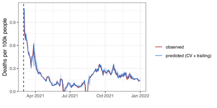Actual Coverage
We would expect the ARX model fitted via
lmand viarqto cover the truth about 95% of the times. Is this actually true in practice?The actual coverage of each predictive interval is
lm.trailing rq.trailing
Coverage 0.9749104 0.8566308- Notice that the coverage of
lmis close to 95%, whilerqhas lower coverage.
Evaluation
Prediction intervals are “good” if they
cover the truth most of the time
are not too wide
Error metric that captures both desiderata: Weighted Interval Score (WIS)
\(F\) = forecast composed of predicted quantiles \(q_{\tau}\) for the set of quantile levels \(\tau\). The WIS for target variable \(Y\) is represented as (McDonald et al., 2021):
\[WIS(F, Y) = 2\sum_{\tau} \phi_{\tau} (Y - q_{\tau})\]
where \(\phi_{\tau}(x) = \tau |x|\) for \(x \geq 0\) and \(\phi_{\tau}(x) = (1-\tau) |x|\) for \(x < 0\).
Computing the WIS
Note
WIS tends to prioritize sharpness (how wide the interval is) relative to coverage (if the interval contains the truth).
WIS for ARX fitted via lm and rq
The lowest mean WIS is attained by quantile regression.
Notice: this method has coverage below 95% but is still preferred under WIS because its intervals are narrower than for linear regression.
Mean WIS lm Mean WIS rq
1 0.06534014 0.05733309Forecasting with Versioned Data
Versioned data
- In our forecasting examples, we have assumed the data are never revised (or have simply ignored revisions, and used data
as_oftoday)
Important
How can we train forecasters when dealing with versioned data?
→ An `epi_archive` object, with metadata:
ℹ Min/max time values: 2020-04-01 / 2021-12-31
ℹ First/last version with update: 2020-04-02 / 2022-01-01
ℹ Versions end: 2022-01-01
ℹ A preview of the table (93566 rows x 5 columns):
Key: <geo_value, time_value, version>
geo_value time_value version case_rate death_rate
<char> <Date> <Date> <num> <num>
1: ak 2020-04-01 2020-04-02 1.797489 0
2: ak 2020-04-01 2020-05-07 1.777061 0
3: ak 2020-04-01 2020-10-28 1.106147 0
4: ak 2020-04-01 2020-10-29 1.797489 0
5: ak 2020-04-01 2020-10-30 1.797489 0
---
93562: wy 2021-12-27 2021-12-28 65.598769 0
93563: wy 2021-12-28 2021-12-29 50.315286 0
93564: wy 2021-12-29 2021-12-30 55.810471 0
93565: wy 2021-12-30 2021-12-31 68.002912 0
93566: wy 2021-12-31 2022-01-01 0.000000 0Version-aware forecasting
# initialize dataframe for predictions
# 5 columns: forecast date, target date, 2.5%, 50%, and 97.5% quantiles
pred_trailing <- data.frame(matrix(NA, ncol = 5, nrow = 0))
colnames(pred_trailing) <- c("forecast_date", "target_date", 'tau..0.025', 'tau..0.500', 'tau..0.975')
w <- 200 #trailing window size
h <- 28 #number of days ahead
# dates when predictions are made (set to be 1 month apart)
fc_time_values <- seq(from = t0_date, to = as.Date("2021-12-31"), by = "1 month")
for (fc_date in fc_time_values) {
# get data version as_of forecast date
data <- epix_as_of(ca_archive, max_version = as.Date(fc_date))
# create lagged predictors
data$lagged_deaths <- dplyr::lag(data$deaths, h)
data$lagged_cases <- dplyr::lag(data$cases, h)
# perform quantile regression
rq_trailing <- rq(deaths ~ lagged_deaths + lagged_cases, tau = quantiles,
# only consider window of data
data = data %>% filter(time_value > (max(time_value) - w)))
# construct data.frame with the right predictors for the target date
predictors <- data.frame(lagged_deaths = tail(data$deaths, 1),
lagged_cases = tail(data$cases, 1))
# make predictions for target date and add them to matrix of predictions
pred_trailing <- rbind(pred_trailing,
data.frame('forecast_date' = max(data$time_value),
'target_date' = max(data$time_value) + h,
predict(rq_trailing, newdata = predictors)))
}Version-aware predictions (CV, trailing)
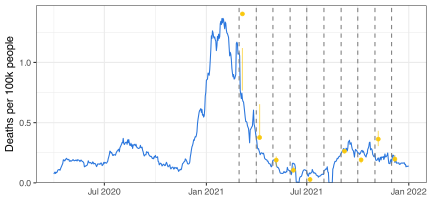Modeling Multiple Time Series
Using geo information
Assume we observe data over time from multiple locations (e.g. states or counties).
We could
Estimate coefficients separately for each location (as we have done so far).
Fit one model using all locations together at each time point (geo-pooling). Estimated coefficients will not be location specific.
Estimate coefficients separately for each location, but include predictors capturing averages across locations (partial geo-pooling).
Geo-pooling (trailing window)
usa_archive <- data_archive$DT %>%
as_epi_archive()
# initialize dataframe for predictions
# 6 columns: geo value, forecast date, target date, 2.5%, 50%, and 97.5% quantiles
pred_trailing <- data.frame(matrix(NA, ncol = 6, nrow = 0))
colnames(pred_trailing) <- c('geo_value', 'forecast_date', 'target_date',
'tau..0.025', 'tau..0.500', 'tau..0.975')
w <- 200 #trailing window size
h <- 28 #number of days ahead
for (fc_date in fc_time_values) {
# get data version as_of forecast date
data <- epix_as_of(usa_archive, max_version = as.Date(fc_date))
# create lagged predictors for each state
data <- data %>%
arrange(geo_value, time_value) %>%
group_by(geo_value) %>%
mutate(lagged_deaths = dplyr::lag(deaths, h),
lagged_cases = dplyr::lag(cases, h)) %>%
ungroup()
# perform quantile regression
rq_trailing <- rq(deaths ~ lagged_deaths + lagged_cases, tau = quantiles,
# only consider window of data
data = data %>% filter(time_value > (max(time_value) - w)))
# construct dataframe with the right predictors for the target date
new_lagged_deaths <- data %>%
filter(time_value == max(time_value)) %>%
select(geo_value, deaths)
new_lagged_cases <- data %>%
filter(time_value == max(time_value)) %>%
select(geo_value, cases)
predictors <- new_lagged_deaths %>%
inner_join(new_lagged_cases, join_by(geo_value)) %>%
rename(lagged_deaths = deaths,
lagged_cases = cases)
# make predictions for target date and add them to matrix of predictions
pred_trailing <- rbind(pred_trailing,
data.frame(
'geo_value' = predictors$geo_value,
'forecast_date' = max(data$time_value),
'target_date' = max(data$time_value) + h,
predict(rq_trailing, newdata = predictors)))
}
# geo-pooled predictions for California
pred_ca <- pred_trailing %>%
filter(geo_value == 'ca') %>%
rename(median = `tau..0.500`,
lower = `tau..0.025`,
upper = `tau..0.975`) %>%
full_join(ca %>% select(time_value, deaths), join_by(target_date == time_value)) %>%
arrange(target_date)Geo-pooled predictions for California
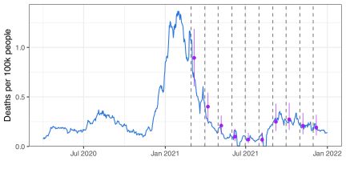Partial geo-pooling (trailing window)
# initialize dataframe for predictions
# 6 columns: geo value, forecast date, target date, 2.5%, 50%, and 97.5% quantiles
pred_trailing <- data.frame(matrix(NA, ncol = 6, nrow = 0))
colnames(pred_trailing) <- c('geo_value', 'forecast_date', 'target_date',
'tau..0.025', 'tau..0.500', 'tau..0.975')
w <- 200 #trailing window size
h <- 28 #number of days ahead
for (fc_date in fc_time_values) {
# get data version as_of forecast date
data <- epix_as_of(usa_archive, max_version = as.Date(fc_date))
# create lagged predictors
data <- data %>%
arrange(geo_value, time_value) %>%
group_by(geo_value) %>%
mutate(lagged_deaths = dplyr::lag(deaths, h),
lagged_cases = dplyr::lag(cases, h)) %>%
ungroup() %>%
group_by(time_value) %>%
mutate(avg_lagged_deaths = mean(lagged_deaths, na.rm = T),
avg_lagged_cases = mean(lagged_cases, na.rm = T)) %>%
ungroup()
# perform quantile regression
rq_trailing <- rq(deaths ~ lagged_deaths + lagged_cases + avg_lagged_deaths +
avg_lagged_cases, tau = quantiles,
data = (data %>% filter(geo_value == 'ca')))
# construct data.frame with the right predictors for the target date
new_lagged_deaths <- data %>%
filter(time_value == max(time_value)) %>%
select(geo_value, deaths) %>%
mutate(avg_lagged_deaths = mean(deaths, na.rm = T)) %>%
filter(geo_value == 'ca')
new_lagged_cases <- data %>%
filter(time_value == max(time_value)) %>%
select(geo_value, cases) %>%
mutate(avg_lagged_cases = mean(cases, na.rm = T)) %>%
filter(geo_value == 'ca')
predictors <- new_lagged_deaths %>%
inner_join(new_lagged_cases, join_by(geo_value)) %>%
rename(lagged_deaths = deaths,
lagged_cases = cases)
# make predictions for target date and add them to matrix of predictions
pred_trailing <- rbind(pred_trailing,
data.frame(
'geo_value' = predictors$geo_value,
'forecast_date' = max(data$time_value),
'target_date' = max(data$time_value) + h,
predict(rq_trailing, newdata = predictors)))
}
# partially geo-pooled predictions for California
pred_ca <- pred_trailing %>%
filter(geo_value == 'ca') %>%
rename(median = `tau..0.500`,
lower = `tau..0.025`,
upper = `tau..0.975`) %>%
full_join(ca %>% select(time_value, deaths), join_by(target_date == time_value)) %>%
arrange(target_date)Partially geo-pooled predictions for California
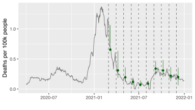Final slide
Thanks:
- The whole CMU Delphi Team (across many institutions)
- Optum/UnitedHealthcare, Change Healthcare.
- Google, Facebook, Amazon Web Services.
- Quidel, SafeGraph, Qualtrics.
- Centers for Disease Control and Prevention.
- Council of State and Territorial Epidemiologists


Time series — cmu-delphi/insightnet-workshop-2024